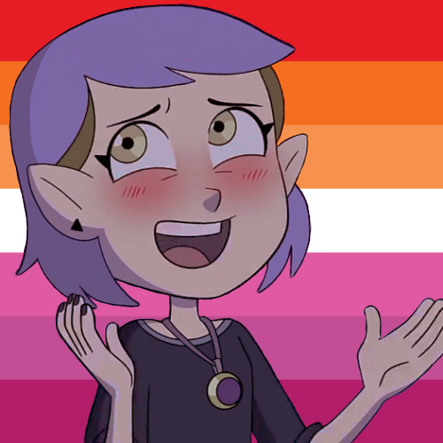
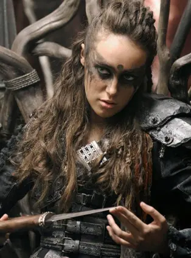
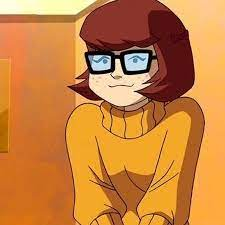
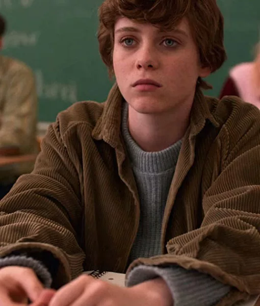
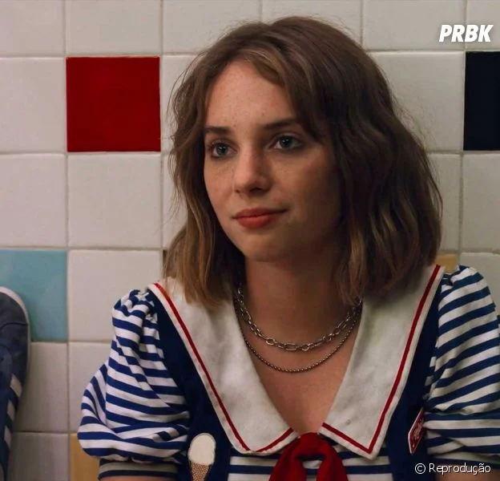
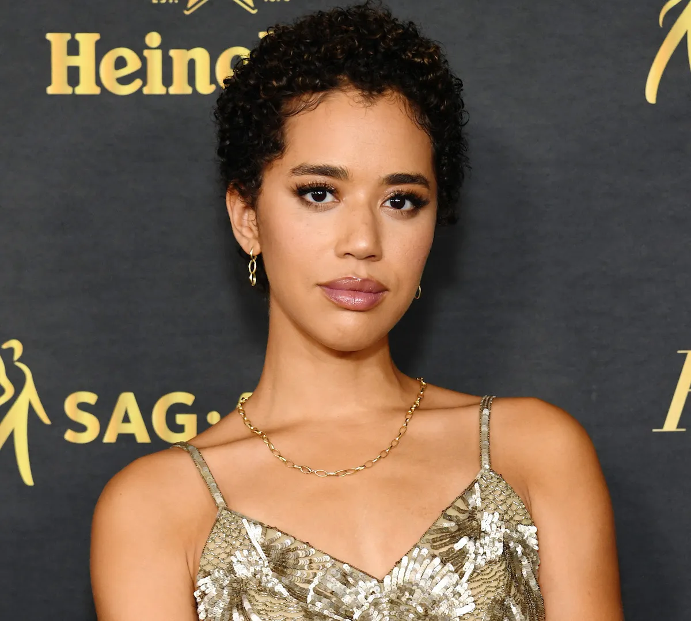
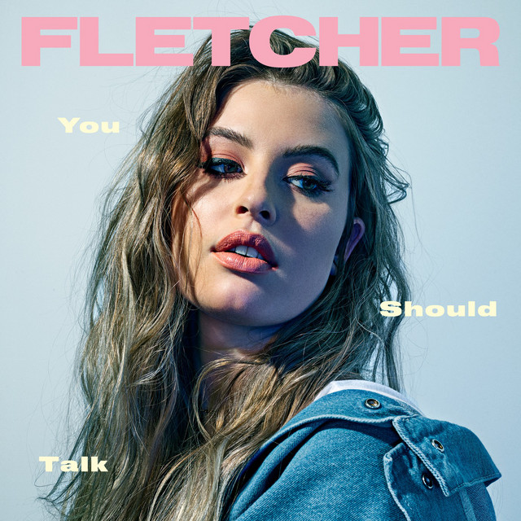

Personagens
Catra e Adora
Catra e Adora , conhecida no fandom como " Catradora ", é o relacionamento romântico lésbico canônico entre a protagonista principal, Adora , e a ex-antagonista, Catra . Começando como amigos de infância, mas intensificando-se para uma rivalidade feia, ambos passam por um grande desenvolvimento de caráter, terminando como parceiros românticos.
série: She-ra e as Princesas do Poder

Amity Blight
Amity Blight é um personagem em The Owl House. Ela é uma jovem bruxa prodigiosa que frequenta a Escola de Magia e Ocultismo de Hexside. Embora ela tenha sido originalmente descrita como uma antagonista, Amity mostrou tons mais claros à sua natureza depois de se ligar a Luz.
série: The owl house
Ellie Williams
Ellie cresceu órfã na zona de quarentena de Boston e frequentou uma escola preparatória militar , onde conheceu e fez amizade com Riley Abel . Quando Ellie tinha quatorze anos, os dois foram infectados com a infecção cerebral por Cordyceps , onde Ellie descobriu que estava imune. Uma amiga de sua mãe e líder dos Vagalumes , Marlene , acreditava que ela era a chave para a engenharia reversa de uma vacina. Marlene encarregou Joel Miller , um contrabandista , de escoltar Ellie para fora do QZ. A simples entrega se transformou em uma jornada de um ano pela América, e os dois eventualmente formaram um vínculo estreito.
Ao chegar aos Vagalumes em Salt Lake City , Joel aprendeu que somente matar Ellie poderia criar a cura. Recusando-se a permitir isso, ele matou o cirurgião-chefe e fugiu com Ellie para se estabelecer em Jackson , a comunidade de seu irmão no Wyoming . Nos quatro anos seguintes, Ellie ficou ressentida com Joel por salvar sua vida. Em 2038 , Abby Anderson , ex-Firefly e filha do cirurgião, encontrou e matou Joel. Ellie jurou vingança e perseguiu Abby até Seattle . Seus esforços foram infrutíferos, levando-a a se aposentar em uma fazenda com sua namorada Dina e seu filho JJ.. Incapaz de perdoar Abby, Ellie abandonou sua família e a perseguiu mais uma vez até Santa Bárbara , apenas para poupar Abby no final. Ela voltou para Jackson mais uma vez, aceitando a morte de Joel e sua decisão de salvar sua vida.
jogo e série: The Last Of Us

Lexa
Lexa foi Comandante dos 12 clãs, Lexa foi a razão pela qual os clãs se uniram para lutar contra Monte Weather e, sem ela, a Coalizão cairia.
série: The 100
Velma Dinkley
Velma Dinkley é o gênio residente de óculos da Mystery Inc. , muitas vezes sendo quem decifra as pistas e resolve os crimes.
tudo relacionado a scooby doo
Toni Shalifoe
Toni Shalifoe é uma lésbica com problemas de raiva, Toni sente que todo mundo quer ferrar com ela... já que quase todo mundo em sua vida já fez isso. Apesar de sua agressividade, Toni tem um lado mais suave e uma grande capacidade de amar, como evidenciado por sua lealdade feroz à sua melhor amiga Martha.
série: The Wilds

Shelby Goodkind
Shelby Goodkind é ela é uma princesa de concurso temente a Deus do coração do Texas, cujo otimismo natural ajuda todos os adolescentes náufragos a permanecerem esperançosos. Apesar de sua aparência angelical, Shelby tem muita coragem escondida e uma série de segredos que ela esconde dos outros, incluindo sua identidade como lésbica.
série: The Wilds

Nicole Haught
Nicole Haught é a xerife do Departamento do Xerife do Purgatório e aliada da Divisão Black Badge . Nicole é ex-esposa de Shae Pressman e atual esposa de Waverly Earp . Ela forma um vínculo maternal com o refúgio adolescente, Rachel Valdez .
série: Wynonna Earp

Sydney Novak
Sydney Novak é uma adolescente problemática de 17 anos com problemas ocasionais de negatividade que muitas vezes luta com sua sexualidade e também possui poderes semelhantes aos da telecinesia que ela possivelmente herdou de seu pai. Sua mãe é Maggie Miller . Seu irmão mais novo é Liam Novak . Syd teve um pai que morreu, provavelmente por suicídio, já que não conseguia lidar com seu TEPT e outros problemas psicológicos.
série: I'm not okay with this
Robin Buckley
Robin Buckley, interpretada por Maya Hawke, é uma das personagens protagonistas, introduzida na terceira temporada de Stranger Things. Ela trabalhava no Scoops Ahoy localizado no Starcourt Mall junto de Steve Harrington.
Robin começou a trabalhar na Scoops Ahoy localizada no Starcourt Mall no verão de 1985, junto de seu colega formando Steve Harrington. Robin gostava de zombar de Steve, já que ela tinha um pouco de ciúmes dele durante o período escolar por causa de sua crush, Tammy Thompson, que gostava dele. Quando ela ouviu que Dustin Henderson tinha interceptado uma transmissão russa secreta, Robin ajudou eles a traduzirem a mensagem e a descobrir que tinham russos em Hawkins, trabalhando embaixo do shopping. Com Steve, Dustin, e Erica Sinclair, Robin começou a lentamente descobrir sobre a atividade paranormal que os russos estavam trabalhando envolvendo uma Chave, que abria um Portal. Durante esse período, Robin começou a criar uma amizade com Steve e revelou a sua sexualidade a ele. Robin também ajudou os outros amigos de Dustin na batalha contra o Devorador de Mentes antes do portal ser fechado por Joyce Byers. Três meses depois, Robin continuou a ser amiga de Steve, e juntos procuravam um emprego novo na Family Video.
série: Stranger Things
Elodie Davis
Elodie Davis é uma ladrão habilidosa e demonstra isso em muitas ocasiões. Ela tem uma mala debaixo da cama cheia de tudo que roubou. Ela é uma das três protagonistas principais.
série: Gatunas

Tara e Darcy
série: Heartstopper

Sam e Deena
Filmes: Rua do Medo: 1994, Rua do Medo: 1978 parte II, Rua do Medo: 1666 parte III

Kate Messner
série: Everything Sucks!

Atrizes
Jasmin Savoy Brown
Jasmin Savoy Brown é uma atriz e dubladora estadunidense mais conhecida por seu trabalho na franquia Pânico e na série Yellowjackets. Nascida na Califórnia, praticou atuação desde a infância e iniciou a carreira com participações em seriados como Grimm e Brooklyn Nine-Nine. Ganhou reconhecimento por integrar o elenco da 2ª e 3ª temporadas de The Leftovers, série da HBO, e por participar de For The People, série de Shonda Rhimes. Jasmin também se destaca na aclamada série Yellowjackets, na qual ela interpreta a versão adolescente da personagem Taissa.
No cinema, fez sua estreia em 2014 no longa Encalhados, de Sam Rockwell, mas o grande sucesso veio em 2022 com o quinto filme de Pânico, no qual ela interpreta Mindy Meeks-Martin. Já como dubladora, Jasmin emprestou sua voz para a série animada da Netflix Final Space, além de dublar Phin Mason no videogame Spider-Man: Miles Morales, da Marvel. Em 2023, Jasmin Savoy Brown reprisa o papel de Mindy no sucesso slasher Pânico 6, além de retornar para a terceira temporada de Yellowjackets e fazer uma participação especial em Desaparecida, suspense estrelado por Storm Reid.
Jodie Foster
Alicia Christian Foster, mais conhecida como Jodie Foster, é uma atriz, produtora e diretora norte-americana, nascida nos Estados Unidos, e que se destaca por seus trabalhos em O Silêncio dos Inocentes (1991), Valente (2007) e Taxi Driver: Motorista de Táxi (1976). Aos 3 anos, Jodie começou a trabalhar como modelo, participando de alguns comerciais que a levaram ao seu primeiro trabalho na televisão, em 1968, com pequenas aparições na série Mayberry R.F.D. (1968-1971). Ela continuou com pequenos papéis na televisão até 1972, quando estreou no cinema com o filme Napoleão e Samantha. Durante as gravações do longa, Foster acabou sendo atacada por um leão, e ficou com algumas cicatrizes nas costas.
Alguns de seus trabalhos seguintes foram Brutal Beleza (1972), O Pequeno Índio (1973), As Aventuras De Tom Sawyer (1973) e Alice Não Mora Mais Aqui (1974), de Martin Scorsese - que, mais tarde, lhe garantiu um papel em Taxi Driver: Motorista de Táxi, rendendo sua primeira indicação ao Oscar e dois BAFTAs. Em 1976, os olhos da crítica especializada permaneceram sobre Jodie em Quando as Metralhadoras Cospem, Ecos de Um Verão, A Menina do Outro Lado da Rua e Se Eu Fosse Minha Mãe - que lhe rendeu uma indicação ao Globo de Ouro. No mesmo ano, ela apresentou o Saturday Night Live - sendo a segunda pessoa mais jovem a apresentar o programa. Em 1981, começou a estudar na Universidade de Yale, deixando a atuação em segundo plano e participando de filmes somente durante as férias de verão. Na época, ela atuou em títulos como O'Hara's Wife (1982), Um Hotel Muito Louco (1984) e Domínio Cruel (1984). Porém, nenhum deles conquistou grandes audiências e, após sua formatura, Jodie teve dificuldades para encontrar novos papéis.
Seus próximos trabalhos receberam críticas mistas: alguns foram fracassos e, outros, recebidos mais positivamente. Em 1988, porém, Jodie voltou a se destacar com Acusados, conquistando seu primeiro Oscar e Globo de Ouro. Em 1991 participaria do filme que marcaria para sempre sua carreira, destacando-se como uma de suas melhores performances e lhe rendendo outro BAFTA e seu segundo Oscar: O Silêncio dos Inocentes. No mesmo ano, fundou sua própria produtora, a Egg Pictures, e lançou Mentes que Brilham, seu primeiro trabalho como diretora. Desde 2010, Jodie não largou a atuação, mas vem focando mais em sua carreira como diretora - projetos dentre os quais podemos destacar as séries House of Cards (2013-2018), Orange Is the New Black (2013-2019) e Black Mirror (2011-).
Em 1993, Jodie conheceu a produtora Cydney Bernard, com quem teve dois filhos e manteve um relacionamento até 2001. Em 2014, casou-se com a fotógrafa Alexandra Hedison.

Nanda Costa
Fernanda Costa Campos Cotote (Paraty, 24 de setembro de 1986), conhecida como Nanda Costa, é uma atriz, cantora e compositora brasileira, que ganhou notoriedade por seus trabalhos na televisão. Ela é vencedora do prêmio de melhor atriz pelo Festival do Rio, e ainda acumula indicações para um Grande Otelo, dois Prêmios Guarani, dois Prêmios Qualidade Brasil, e um Prêmio ACIE. Em 2018, ela recebeu uma indicação ao Grammy Latino de Melhor Canção em Língua Portuguesa. Costa iniciou sua carreira atuando na novela Cobras e Lagartos, em 2006, onde ganhou destaque como a vilã Madá. Após um hiato de dois anos, ela voltou a atuar, no cinema, em filmes como Sexo com Amor? e Bezerra de Menezes, em 2008, sendo que esse último lhe rendeu uma indicação de melhor atriz coadjuvante no Prêmio Qualidade Brasil. Entretanto, o primeiro grande papel aconteceu em 2009 quando ela interpretou a ambiciosa Soraya na novela do horário nobre Viver a Vida, alcançando grande repercussão e reconhecimento da crítica. No ano seguinte, consagrou-se como uma das atrizes mais versáteis de sua geração ao protagonizar o drama Sonhos Roubados, sendo muito elogiada e premiada em festivais, como o Festival do Rio, além de garantir indicações como melhor atriz no Prêmio Guarani e no Prêmio ACIE de Cinema.
Na novela Cordel Encantado, de 2011, ganhou destaque em um personagem cômico, interpretando Lilica. No mesmo ano voltou a ser aclamada no cinema no drama independente Febre do Rato, onde deu vida a Eneida. Por esse trabalho, recebeu indicação da Academia Brasileira de Cinema ao Grande Otelo de Melhor Atriz, além de receber sua segunda indicação ao Prêmio Guarani. Em 2012 ela alcançou o posto de protagonista de uma novela das nove, como Morena em Salve Jorge, tornando-se uma das atrizes mais conhecidas do país. A novela fez muito sucesso e foi exportada para vários países, sendo esse seu trabalho mais famoso. Por esse trabalho, foi indicada como melhor atriz internacional no Soap France Awards, na França, em 2019. Desde então, alcançou sucesso em vários outros trabalhos, entre eles como a golpista Sandra Helena, em Pega Pega (2017), a policial Maura em Segundo Sol (2018) e a cabeleira Érica em Amor de Mãe (2020). No cinema, destacou-se no drama Entre Irmãs (2017), ao lado de Marjorie Estiano, e na comédia O Auto da Boa Mentira (2021). Atualmente, também se dedica à música, como cantora e compositora.

Cantoras
Girl in red
Marie Ulven Ringheim (nascida em 16 de fevereiro de 1999), conhecida profissionalmente como girl in red, é uma cantora e compositora indie pop norueguesa . Seu single "i wanna be your girlfriend" ganhou mais de 30 milhões de streams no Spotify, e foi listado no nono lugar na lista do The New York Times de "As 68 melhores músicas de 2018". Desde 2018, Ringheim lançou duas peças estendidas de seu estúdio e acumulou mais de 3 milhões de streamers mensais no Spotify.
Ringheim foi nomeada uma "estranha ícone" pela revista Paper, e um "fenômeno" que é "um das mais astutas e singer-songwriters emocionantes que trabalham no mundo da música da guitarra" pela New York Times. Ela é conhecida por atrair jovens adolescentes com seus "hinos pop sobre quarto romance estranho e saúde mental". Sua música, feita a partir do conforto de seu quarto, acumulou mais de 150 milhões de streams em outubro de 2019. Desde 2019, Ringheim realiza duas turnês na América do Norte e duas na Europa, e tem realizada em festivais como Lowlands, e Øyafestivalen. Ela foi nomeada pela NME como "uma das artistas mais badalados do The Great Escape" em 2019.

Carol Biazin
Carol Biazin é uma das grandes potências em ascensão no pop nacional. Com um álbum de estúdio e dois EPs, conquistou um público fiel em apenas cinco anos de carreira. Sua discografia soma 25 milhões de reproduções no Spotify e mais de 100 milhões de views, entre videoclipes, covers e apresentações ao vivo. Nascida e criada no interior do Paraná, Carol chegou à final do The Voice Brasil, em 2017. Meses depois, Carol fez sua estreia nas plataformas digitais com a faixa “Você Tem”, parceria com Dreicon, e o single “Talvez”, sua primeira canção solo, cujo clipe foi eleito o melhor do ano pelo público nas redes sociais do TVZ. Seu primeiro EP intitulado “S” (2019) teve sua produção assinada pela Head Media, com quem criou sua identidade sonora, unindo o R&B ao pop. “S” antecede o álbum de estreia de Carol, “Beijo de Judas” (2020), que conta com parcerias com Luísa Sonza, Vitão, Dilsinho e Gloria Groove.
Multi-instrumentista, Carol também é um talento na composição, tendo escrito diversas letras do cenário pop brasileiro para cantores como Vitão, Anitta, Rouge, Negra Li e Luísa Sonza. Em 2022, assinou contrato com a Universal Music Brasil e lançou seu primeiro projeto audiovisual, “Beijo De Judas (Ao Vivo)”, com produção feita 100% por mulheres. Além de vencer uma categoria do MTV MIAW 2022, Carol Biazin apresenta os singles GAROTA INFERNAL e BRINCA COM A… preparando lançamentos marcantes e versáteis, aplicando ao máximo seu potencial como cantora, compositora e performer.

FLETCHER
Cari Elise Fletcher (nascida em 19 de março de 1994), conhecida como FLETCHER, é uma cantora e compositora americana. Ela fez sua estréia como atriz em 2010 como o papel principal de Katie Howard no filme How Katie Howard Found Herself. Ela fez o teste para a primeira temporada do The X Factor e competiu como parte do grupo Lakoda Rayne. Seu single de estréia, "War Paint", foi lançado em 17 de junho de 2015.
Fofoca agora, Fletcher namorou Shannon Beveridge, atriz do videoclipe de "Wasted Youth", desde o final de 2016 até o inicio de 2020. Elas terminaram no inicio da pandemia, e por essa questão de isolamenyo elas continuaram morando juntas, isso causou muitas recaídas e o albúm "The S(ex) Tapes".
E ano passado(2022) Shannon começou a namorar a Becky, e então foi lançado o single "Becky's so hot"
FLETCHER disse: “Eu escrevi ‘Becky’s So Hot’ há alguns anos, depois que eu estava ‘stalkeando’ no Instagram a nova namorada da minha ex enquanto estava no estúdio. Acidentalmente, eu curti de uma foto dela vestindo uma camiseta vintage da minha ex, uma que eu já usei antes. As complexidades de seguir em frente era algo que eu queria explorar e parecia mais interessante para mim escrever algo sobre a perspectiva de admirá-la; algo como ‘droga… meio que dói que ela seja tão gostosa, mas eu não posso nem ficar brava com isso porque eu entendo… ela é gostosa’”.
